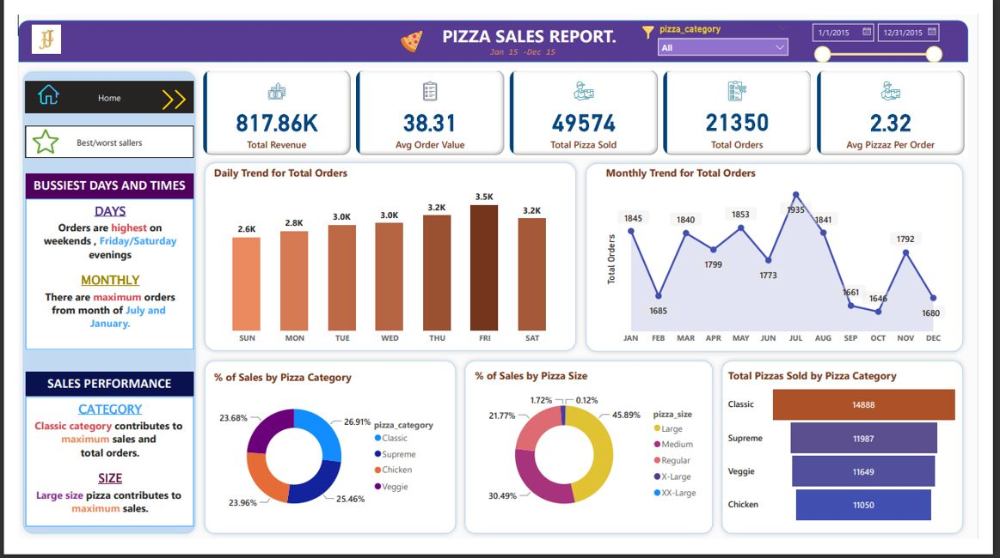
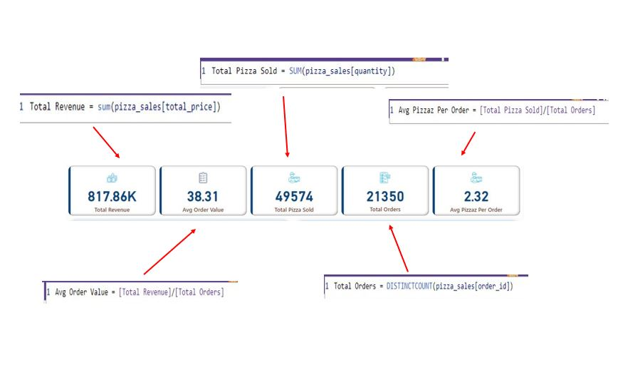
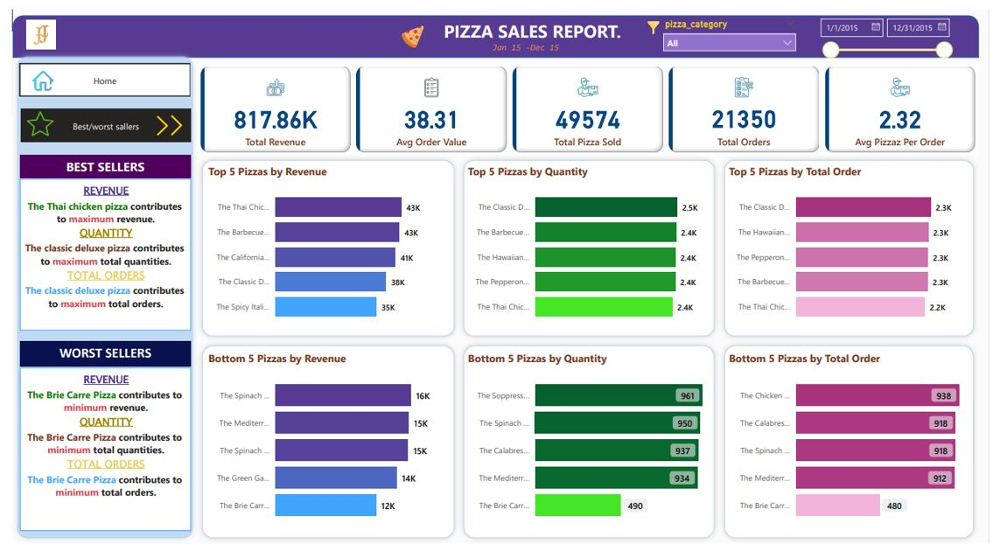

1 st Dashboard.
-
KPI Design.
-
Daily Trenad for Total Orders.
-
Monthly Trend for Total orders.
-
Percentage of sales by Pizza Category.
-
Percentage of sales by Pizza Size.
-
Total pizzas sold by pizza category.
-
Top 5 Best sellers by Revenue , Total Quantity and Total Orders.
-
Bottom 5 sellers by Revenue , Total Quantity and Total Orders.
1 st KPI is Total sales revenue(sum of the total price of pizzas.) In this case we create a new measure .
2 nd KPI is Total Pizza sold(the sum of the quntities of all pizza sold.) we create a new measure here.
3 rd KPI is Average Order Value.(the average amount spent per order , calculated by dividing the total revenue by the total number of orders.) we create a new measure here.
4 th KPI is total orders.(the total number of orders placed.) we create a new measure here.
5 th is Average pizza per order.(the average number of pizza sold per order, calculated bydividing the total number of pizzas sold by the total number of orders.) we create a new measure here.
After calculated of all measure , we create a new card function in power BI.
Create a bar chart that displays the daily trend of total orders over a specific time period. This chart will help us identify any patterns or fluctuations in order volumes on a daily basis.
Create a line chart that illustrates the hourly trend of total orders throughout the day. This chart will allow us to identify peak hours or periods of high order activity.
Create a donut chart that shows the distibution of sales across different pizza categories. This chart will Provide insights into the popularity of various pizza categories and their contribution to overall sales.
Create a donut chart that represents the percentage of sales attributed to different pizza sizes. This chart will help us understand customer preferences for pizza sizes and their impact on sales.
Create a funnel chart that persents the total number of pizzas sold for each pizza category. This chart will allow us to compare the sales performance of different pizza categories.
2 nd Dashboard.
Create a bar chart highlighting the top 5 best selling pizzas based on the revenue , Total quentity , total orders. this charts will help us identify the most popular pizza options.
Create a bar chart highlighting the bottom 5 selling pizzas based on the revenue , Total quentity , total orders. this charts will anable to identify underperforming or lrss popular pizza options.